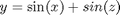
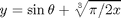
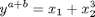
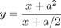
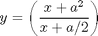
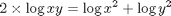
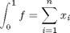

Outils Matlab pour l'écriture d'une page html
L'écriture d'une page html s'apppuie sur la procédure Publish to html. Cela permet de composer une page html contenant des lignes d'instructions Matlab, des commentaires et des équations écrites selon le protocole TeX Equation.
Une page html se compose habituellement de plusieurs sections. Dans un script chaque section correspond à une cellule. Une cellule commence par les symboles %% au début d'une nouvelle ligne, suivis ou pas par un titre de section écrit sur la même ligne. Le texte de la section est formé des lignes suivantes contiguës. Chaque ligne débute par le symbole % suivi d'un espace.
Matlab génère une table des matières à partir des titres de section.
Contents
Description des outils proposés par Matlab
Le menu Cell\Insert Cell Markup de l'éditeur propose les outils html les plus courants. Ils sont tous appropriés sauf LaTeX Markup, qui est utilisé pour générer un document LaTeX.

Bold Text – texte en gras – borner le texte entre deux symboles * (multiplication).
Le gras s'emploie généralement pour mettre en valeur un *titre*, ou encore...
Le gras s'emploie généralement pour mettre en valeur un titre, ou encore pour mettre un mot ou une expression en relief dans un texte où l'italique est déjà utilisé. — OLF
Italic Text – texte en italique – borner le texte entre deux symboles _ (souligné).
% C'est l'imprimeur italien Alde Manuce qui... % D'où le mot _italique_. L'italique s'emploie...
C'est l'imprimeur italien Alde Manuce qui, au début du XVIe siècle, a inventé ce caractère en cherchant à reproduire l'écriture manuscrite de son temps. D'où le mot italique. L'italique s'emploie notamment dans les titres d'œuvres et dans les mots de langue étrangère. — OLF
Monospaced text – police à espacement constant – borner le texte entre deux symboles | (ou logique).
% Police dans laquelle tous les |caractères ont % la même largeur.| La police Courier, par...
Police dans laquelle tous les caractères ont la même largeur. La police Courier, par exemple, est à espacement constant. — OLF
Hyperlinked Text – lien hypertexte – inscrire le lien entre les symboles < et >, par exemple, le lien vers Annexe A, écrire :
<html\Projet250.html Annexe A> ^ NomDeLaPagehtml ^ TitreDuLienAParaître
Preformatted Text – texte préformaté – Dans une page html, texte qui apparaît en police à espacement constant et dont tous les espaces blancs sont lus par le navigateur. Le texte préformaté permet de disposer des données ou du texte en colonnes et en rangées dans une page html. — OLF
Pour spécifier un texte préformaté, il faut le faire précéder d'une ligne de commentaire vide et commencer la ligne suivante à la colonne 4. Pour terminer, laisser une ligne de commentaire vide.
% % Nom Re(MPa) Rm(MPa) A(%) % Inox. AISI 304 recuit 260 565 52 % Al 2024-T4 290 400 13 % Acier 1040 recuit 350 525 30 % Acier 3140 recuit 425 690 25 %
donne :
Nom Re(MPa) Rm(MPa) A(%) Inox. AISI 304 recuit 260 565 52 Al 2024-T4 290 400 13 Acier 1040 recuit 350 525 30 Acier 3140 recuit 425 690 25
Image – Pour inclure une image, spécifier sur une ligne le nom de l'image entre deux paires de symboles < < et > >. Cette ligne doit être précédée et suivie d'une ligne vide, par exemple, pour faire afficher la liste des balises du début de page, écrire :
% % <<..\OutilsBalises.gif>> %
Bulleted List – liste non numérotée – Liste dans laquelle les éléments de liste sont précédés d'un symbole graphique qui peut varier à la visualisation selon le navigateur html utilisé, mais qui est généralement une puce. — OLF
% % Contenu en fibres pour 100 g de céréale % % * Avoine, 10 g % * Épeautre, 12 g % * Kamut, 23 g % * Seigle, 19 g %
donne
Contenu en fibres pour 100 g de céréale
- Avoine, 10 g
- Épeautre, 12 g
- Kamut, 23 g
- Seigle, 19 g
Numbered List – liste numérotée – Liste dans laquelle les éléments de liste sont précédés d'un chiffre en ordre croissant. – OLF
% % Contenu en fibres par ordre décroissant % % # Kamut, 23 g % # Seigle, 19 g % # Épeautre, 12 g % # Avoine, 10 g %
donne
Contenu en fibres par ordre décroissant
- Kamut, 23 g
- Seigle, 19 g
- Épeautre, 12 g
- Avoine, 10 g
Html Markup – balise html – Commande html constituée d'une directive sous forme de mot-clé encadré par les signes < et >, qui permet de mettre en forme un texte et qui indique au navigateur html comment devrait être affiché un document. — OLF
Pour écrire un tableau de 2 lignes et 2 colonnes, écrire :
% % <html> % <table border=1> % <tr> % <td>Ligne 1, colonne 1</td> % <td>Ligne 1, colonne 2</td> % </tr> % <tr> % <td>Ligne 2, colonne 1</td> % <td>Ligne 2, colonne 2</td> % </tr> % </table> % </html> %
| Ligne 1, colonne 1 | Ligne 1, colonne 2 |
| Ligne 2, colonne 1 | Ligne 2, colonne 2 |
Pour écrire une ligne horizontale, écrire hr (horizontal rule) comme suit :
% % <html> <hr> </html> %
Écrire une équation en langage TeX
Une équation est écrite entre une paire de deux signes de dollars $$. Elle doit être précédée et suivie d'une ligne vide débutant par un commentaire.
% % $$y = \sin(x) + sin(z)$$ %
Noter la façon correcte de spécifier le sinus (\sin).

Pour afficher une lettre grecque, il suffit de l'écrire en français sans accent et précédée du signe \.
%
% $$ y = \sin{\theta} + \sqrt[3]{\pi/2x} $$
%Noter l'effet de l'utilisation des accolades ({ et }) sur l'affichage du sinus.

Élever à une puissance (^) et ajouter un indice(_). Noter les paires d'accolades.
%
% $$ y^{a+b} = x_{1} + x_{2}^{3}$$
%
L'instruction \frac{numérateur}{dénominateur} permet d'écrire une fraction.
%
% $$ y = \frac{x + a^2}{x +a/2} $$
%
Il est possible de spécifier des parenthères.
% $$ y = \left(
% \frac{x + a^2}{x +a/2}
% \right)
% $$
Les logarithmes obéissent à la relation suivante :
%
% $$ 2 \times \log xy =
% \log x^{2} + \log y^{2} $$
%
L'instruction \int produit le symbole de l'intégrale.
%
% $$ \int_{0}^{1} f = \sum_{i=1}^{n} x_{i} $$
%
Écrire le texte et reformater les commentaires
- Le texte est écrit sous forme de commentaire (%) dans le script Matlab.
- Après chaque phrase, on peut aller à la ligne. Matlab relie automatiquement les lignes contiguës.
- Pour une lecture ergonomique, limiter la largeur de la ligne. Ajuster les paramètres de l'éditeur de Matlab (menu : File, Preferences).


- Lors de la rédaction, il arrive que l'on déborde vers la droite. Il suffit alors de reformater à l'aide de la commande Wrap selected comments à l'aide du bouton de droite de la souris.

Effet de l'instruction :

Références
- Math into LaTeX, www.ctan.org/pub/tex-archive/info/mil/mil.pdf, 432 pages. Le document est disponible dans le répertoire ing250\Chap5\LaTex_Ref\MathIntoLaTeX.pdf. Noter que le manuel est orienté surtout pour la rédaction de texte LaTeX. Consulter les sections expliquant les équations à l'aide des symboles $$.
Le répertoire ing250\Chap5\LaTex_Ref contient aussi d'autres références.
>> doc tex